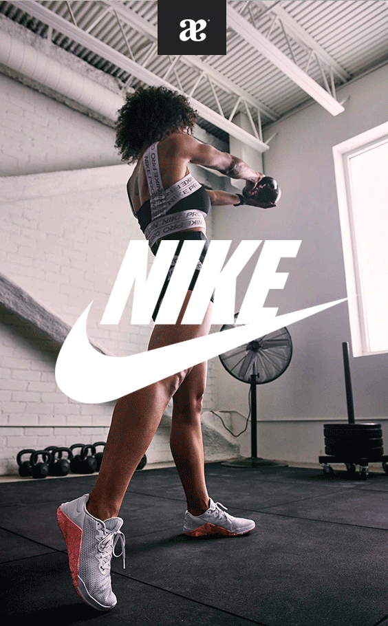

Este es mi Primer Articulo
La principal ventaja de los tenis Nike es la comodidad que le brindan al pie al momento de hacer actividad física o sólo caminar. Por ejemplo, a diferencia de un zapato convencional, los tenis te permiten caminar largas distancias sin sentir dolor en los pies. 
La tecnología Nike Air consiste en una bolsa interior de aire presurizado resistente y a la vez flexible que brinda mayor flexibilidad y rebote sin comprometer la estructura del calzado. ... La amortiguación Nike Air reduce el peso del calzado sin reducir el rendimiento.